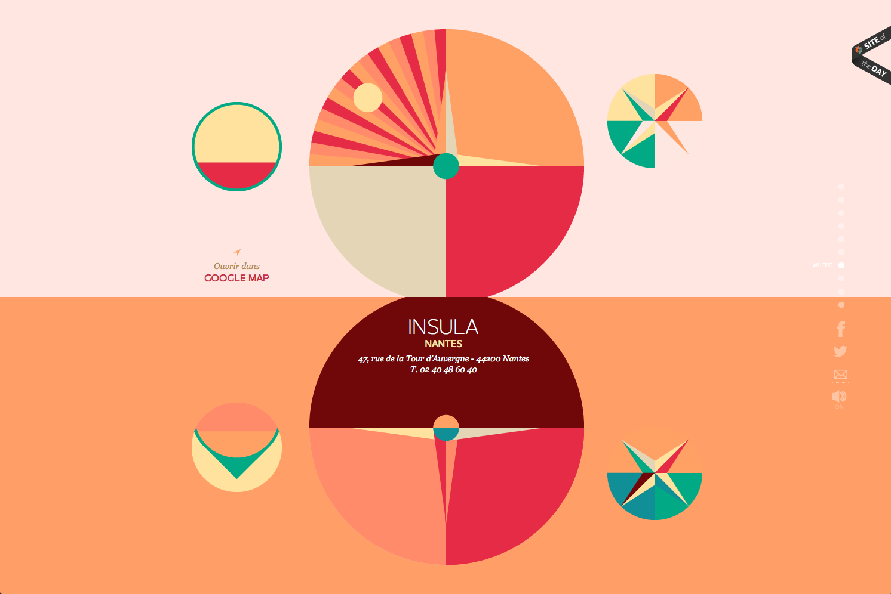

April 15, 2014 - Cool Internet Thing

Like There Is No Tomorrow
This weeks installment of "Cool Internet Thing" is a website titled Like There Is No Tomorrow, which I believe is a website for a New Year's Eve Party. A fancy one. There is English scattered throughout, but most of it appears to be in French.
At this point I've seen a lot of websites using paralax scrolling and other things of the like, although I've never seen one with the center of the page being the axis for these elements to change. I found interesting and beautiful (although not totally functional).
Back